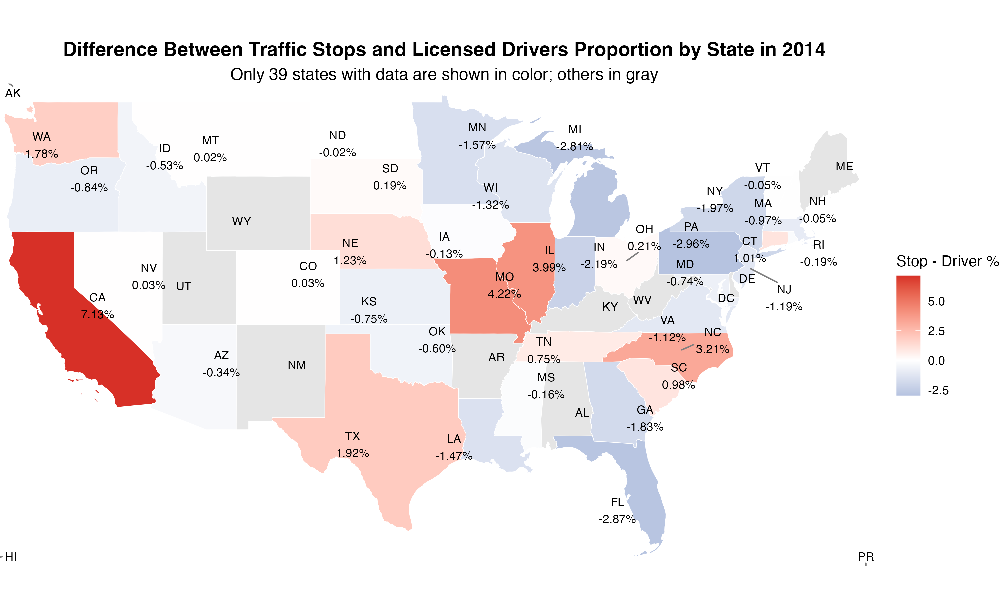

Is there evidence that traffic stops disproportionately target men?
Are certain cities/locations “balanced” in terms of how traffic stops reflect the demography of that city/location?
Setup
Techniques:
Proportion calculation: For each state, we computed the proportion of traffic stops attributed to a particular group (e.g., male drivers or stops per state), and compared it to the corresponding group’s share of the licensed driver population.
Spatial visualization (Choropleth map): We used spatial visualizations to map the differences between stop and license proportions across states. This allowed for quick identification of geographic patterns in over- or under-representation.
Techniques:
Cohen’s h (Effect Size): statistically measure the difference between two proportions, independent of sample size.
Datascope: Focused on overlapping time period (2014–2015) across major U.S. states. For each year, calculate the proportions(male stops, male drivers; licensed drivers proportion in the whole US for each state, stop proportion of the whole US for each state)
Visualization: Generate choropleth maps to visualize geographic differences in stop vs. license proportions.
Cohen’sh: to statistically measure the difference
Results
Is there evidence that traffic stops disproportionately target men?
Whole US
Male_stop_proportion = 66.534%
Male_licensed_driver_proportion = 49.415%
Cohen_h = 0.34852
Result: Mildly overstop Male drivers
State level
All states show positive gaps → more men are stopped than expected.
Similar pattern for both years.
Figure 1: Difference Between Male Traffic Stops & Licensed Male Drivers by state in 2014
Figure 2: Difference Between Male Traffic Stops & Licensed Male Drivers by state in 2015
Cohen’s h Results
Cohen’s h Results
Key Takeaways
Nationwide Trend: Most states, as well as the U.S. overall, show mild overrepresentation of male drivers in traffic stops compared to their share of licensed drivers.
Balanced States: Only Nevada (NV) and Kansas (KS) show gender-balanced enforcement, with male stop rates aligning closely with male driver proportions.
High Overstop State:Pennsylvania (PA) exhibits a notably higher overstop rate for male drivers.
Real-world Takeaways
Operational Patterns: The mild overstop of male drivers may be linked to driving behavior patterns
Results Cont.
Are certain cities/locations “balanced” in terms of how traffic stops reflect the demography of that city/location?
Datascope: 2014-2015
39 states
3 states did not have any overlap with other major states
Choropleth maps show the difference between stop and license proportions by state in 2014 and 2015.
Red indicates more stops than expected, blue indicates fewer stops than expected, white/gray denotes minimal difference.

Figure 3: Differences between Traffic Stops & Licensed Drivers Proportion by State in 2014
Figure 4: Differences between Traffic Stops & Licensed Drivers Proportion by State in 2015
Consistently Under-Policed States (fewer stops than expected in both years):
Pennsylvania(PA)
Florida(FL)
Michigan(MI)
Indiana(IN)
Consistently Over-Policed States (more stops than expected in both years):
California(CA)
Illinois(IL)
Missouri(MO)
North Carolina(NC)
State
2014
2015
Missouri(MO)
Mildly Imbalanced
Mildly Imbalanced
Michigan(MI)
Mildly Imbalanced
Balaneced
Indiana(IN)
Mildly Imbalanced
Mildly Imbalanced
Most states are statistically balanced in terms of traffic stop proportions vs. licensed driver proportions.
Only a few states showed mild imbalance across both years, These imbalances are small in magnitude and may have limited real-world impact.
No strong evidence of systemic geographic bias in traffic stops across states
Small imbalances may reflect local operational factors (e.g., highway traffic, policing resource allocation)